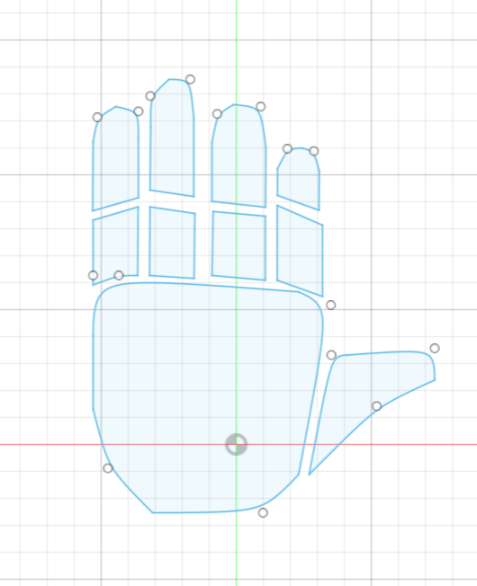

<div class="textcontainer">
<p class="margin"> </p>
<h3>Week 3: Hand Tools and Fabrication</h3>
<p class="margin"> </p>
<div class="flexrow">
<a id="btn" href="./week3.zip" download>Download my CAD files from this week!
</a>
</div>
<p class="margin"> </p>
<h4>Kinetic Sculpture</h4>
My original plan for the kinetic sculpture was to make some kind of clock, but life got kind of crazy and I ended up missing the week's assignment and having to make it up later in the semester. I ended up pivoting to a project that had 2 fewer hands than a clock, which is to say it would have one hand. The basic idea I had was to cut out pieces of cardboard to look like a human hand. I wanted to have 10 pieces (one for the palm, one for the thumb, and then 2 pieces for each other finger), which would be joined together by some semi-rigid structure. Then I could use string to join the tips of each finger with a spinning motor or crank, which would make the hand seem like it was curling and uncurling as the driver turned.
<p class="margin"> </p>
<div class="flexrow">
<img src="week3first image.jpeg" alt="">
</div>
<p class="caption">The plan</p>
First I went through and tried to model the pieces I’d need to cut in Fusion 360… As usual this was a painful process.The final result looked… fine. Certainly not my best work but not my worst either! In hindsight I realized that in order for the motion of the fingers to be detectable, I’d need the distance the motor moved them to be much larger than what the little axel on the stepper motor I had could provide, but this was a good start.
<p class="margin"> </p>
<div class="flexrow">

</div>
<p class="caption">The hand cuts!</p>
A trip quick to the laser cutter and I had all the pieces I’d need… except for the semi rigid structure that would basically make the frame of the hand. For that I took some zipties, and just hot glued them right to the hand pieces. I bent them a couple times to establish creases at the locations I wanted to bend when the sculpture moved suddenly I had something that looked pretty hand shaped. Before I put the strings on, I spent a few minutes building a pedestal for the hand to rest on. Without it, the hand would just be pulled by the string rather than the fingers curling. I just used some plywood and a 1x1 piece of wood for this. After that I mounted the hand onto the pedestal with a drywall screw, and then taped the strings onto each finger.
<p class="margin"> </p>
<div class="flexrow">
<img src="lasercutting week3.jpeg" alt="">
</div>
<p class="caption">Making some cuts!</p>
And Here is the Sculpture! And the scultpure attached to a handcrank!
<p class="margin"> </p>
<div class="flexrow">
<img src="sculpture week three.jpeg" alt="">
</div>
<p class="caption">Yay!</p>
<p class="margin"> </p>
<div class="flexrow">
<video controls>
<source src="video-url" type="video/mp4">
</video>
</div>
<p class="caption">It's kinetic!</p>
</div>